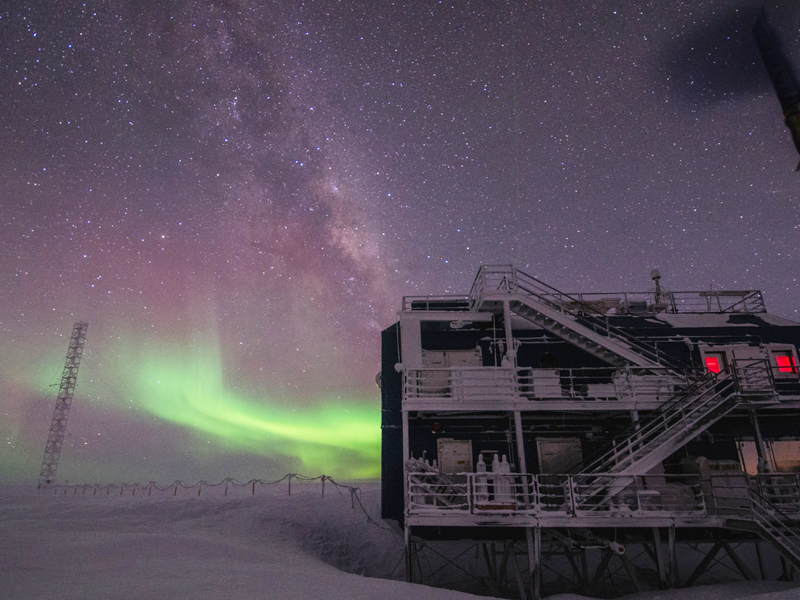

gnb-bg
ENG
found in the poles at the end of the world
더 나은 세상을 위해서극지의 환경을 연구합니다
세상의 끝 극지에서 찾은 새로운 가치.
Finish the Arctic voyage and prepare for the long Antarctic voyage.
인류의 미래를 위하여극지의 생태를 조사합니다
북극 항해를 끝내고 기나긴 남극 항해를 준비하다.
protect all living quarters
FOR THEECOLOGYWE MUSTOF THEEARTH
We work for the environment
capable of sailing independently
보급지원 항해로남북극을 누비다
남·북극 결빙해역에서의 독자적인 극지연구 수행남·북극 기지에 대한 보급 및 인원 수송
PHYSIOLOGICAL
ECOLOGY OF
TERRESTRIAL LIFE
INTRODUCE
연구와 보급 지원 항해로 남북극을 누비다.
아이콘
세계 12번째의 과학 기지.
세상의 끝에 우뚝 서다.
우리나라 최초의 남극 과학기지.
프리뷰
넥스트
TICK OFF
극지에 대한 이해도 제고를 위해 자료 제공.
세상의 끝에서 미래를 열어갑니다.

남극 대륙의 과학적 관측 및 결과.
TAKE A LOOK
“집단으로 이동하는 아델리 펭귄 무리”를관찰하였습니다.
“웅장하게 자리한 남극 빙하”를 고화질 사진으로만나보세요.
“눈으로 뒤덮힌 거대한 남극 대륙”을 직접 눈으로보는 것처럼 생생하게 담았습니다.
[보도] 극지연구소-GS리테일, ‘기후위기 대응’캠페인 전개
극지연구소, 인천 연수구 취약계층 후원물품 지원...“나눔 실천이야기”
제주대학교 해양생명과학과, 극지연구소와“제1회 공동 워크숍 개최”
2022년 기간제계약직(행정직/기술직)공개채용 공고
2022년 박사후 연수연구원(지질학(퇴적학)/화학해양학(물질순환) 채용 재공고
(상시채용) 무기계약직(시설관리직/경비)공개채용 공고
연구소 소개 팜플릿
기후환경변화의 원인규명과 미래 예측 및 기후변화를파악하는 것을 목표로 연구를 수행하고 있습니다.
극지방의 육지와 바다를 탐사하여 지질환경의 미래를예측하는 연구를 수행하고 있습니다.
미래 기후 변화를 예측하는 세가지 연구를 중점으로수행하고 있습니다.
우리나라가 남극에 관심을 갖고 남극지역에 진출한 것은 1978년이었다.그후 1988년 세종기지 건설 이후 우리나라의 남극활동은 비약적으로 발전해 연구분야와 지역이 확대되고 있다.
KOPRI NEWS